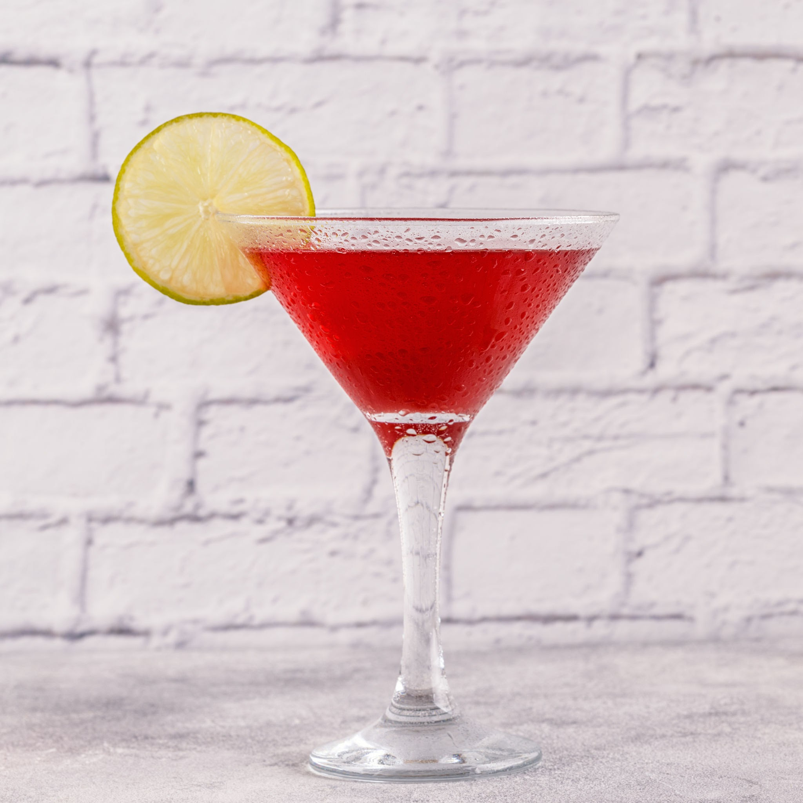

Classic Recipes to Master Your Skills
Here are some timeless cocktails to practice. We've included a mix of shaken, stirred, and muddled drinks. Click on the tabs below to explore (note: tabs are for navigation; all recipes are displayed for simplicity).

Classic Margarita
Ingredients:
- 2 oz (60ml) Blanco Tequila
- 1 oz (30ml) Fresh Lime Juice
- 1 oz (30ml) Cointreau (or other Triple Sec)
- Coarse salt for the rim (optional)
- Lime wedge for garnish
Instructions:
- Dip a lime wedge in coarse salt after rubbing it around therim of your glass.
- Pour Cointreau, tequila, and lime juice into an ice-filled shaker.
- Shake vigorously until thoroughly chilled, about 15 seconds.
- Serve "up" in a coupe or strain into the prepared glass over fresh ice.
- Garnish with a lime wedge.

Old Fashioned
Ingredients:
- 2 oz (60ml) Bourbon or Rye Whiskey
- 1 Sugar Cube (or 1 tsp sugar)
- 2-3 dashes Angostura Bitters
- Splash of water
- Large ice cube
- Orange peel for garnish
Instructions:
- In a mixing glass, put the sugar cube. Pour in a little water and the bitters.
- Gently muddle until the sugar dissolves.
- Add the whiskey and the large ice cube.
- Stir gently with a bar spoon for about 30 seconds to chill and dilute.
- Serve in the same glass or strain into a rocks glass over a new large ice cube.
- Squeeze the orange peel to release its oils, then drop it into the drink.
Mojito
Ingredients:
- 2 oz (60ml) White Rum
- 1 oz (30ml) Fresh Lime Juice
- 2 tsp Superfine Sugar
- 8-10 Fresh Mint Leaves
- 2 oz (60ml) Club Soda
- Mint sprig for garnish
Instructions:
- Place the mint leaves and sugar into a sturdy highball glass.
- Add the fresh lime juice and gently muddle to release the mint oils (don't shred the leaves!).
- Add the white rum and stir to dissolve the sugar.
- Fill the glass with crushed ice.
- Top off with club soda.
- Garnish with a fresh mint sprig.
.jpeg)
Martini
Ingredients:
- 2 ½ ounces (75 ml) London Dry Gin
- ½ oz (15 ml) Dry Vermouth
- Garnish: Lemon twist or green olive
Instructions:
- Place your cocktail glass in the freezer for at least 15 minutes before you begin. A properly chilled glass is essential.
- Add the gin and dry vermouth to a mixing glass.
- Fill the mixing glass about three-quarters full with fresh, cold ice cubes.
- Stir the mixture gently and consistently with a bar spoon for about 30 seconds. The goal is to chill the drink and achieve a slight dilution, which softens the alcohol. The outside of the mixing glass should become very cold and frosty.
- Place the strainer over the mixing glass and pour the cocktail into your pre-chilled glass.
- Cut a swath of lemon peel. Hold it skin-side down over the drink and twist it to express the citrus oils onto the surface. You can then rub the peel around the rim of the glass and drop it in.

Cosmopolitan
Ingredients:
- 2 oz (60 ml) Citrus Vodka (like Absolut Citron, or use unflavored vodka)
- ¾ oz (22.5 ml) Cointreau (or another high-quality orange-flavored liqueur)
- ¾ oz (22.5 ml) Fresh Lime Juice (squeezing it fresh is key)
- ½ oz (15 ml) Cranberry Juice Cocktail (use the sweetened version, not 100% pure cranberry juice, to maintain the drink's balance)
- Garnish: A lime wedge, lime twist, or a flamed orange peel
Instructions:
- Place your cocktail glass in the freezer for about 10-15 minutes before you start. A properly chilled glass is essential.
- Fill your cocktail shaker with a generous amount of ice. Add the vodka, Cointreau, fresh lime juice, and cranberry juice cocktail.
- Secure the lid and shake the mixture hard for about 15-20 seconds. The shaker should become ice-cold and frosty on the outside.
- Remove the cap from your shaker and strain the drink through the built-in strainer (or a separate Hawthorne strainer) into your chilled cocktail glass.
- Garnish your drink with a lime twist or wedge and serve immediately.